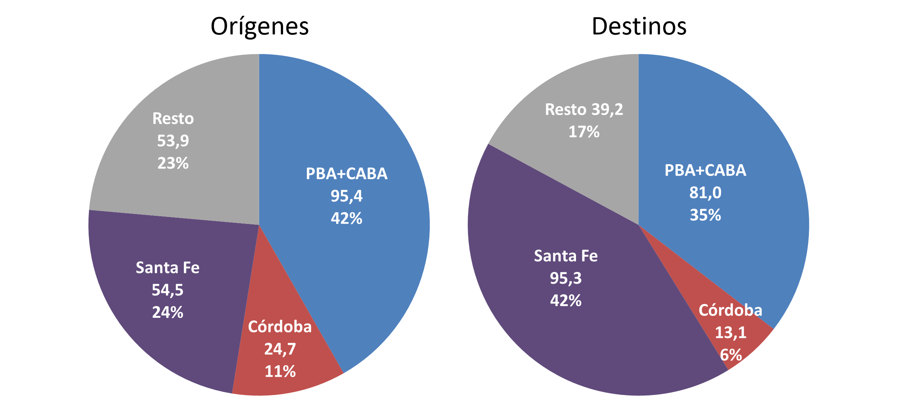
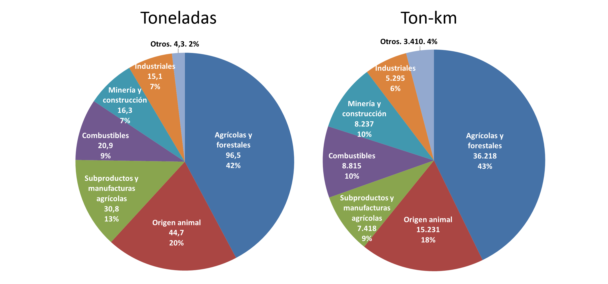
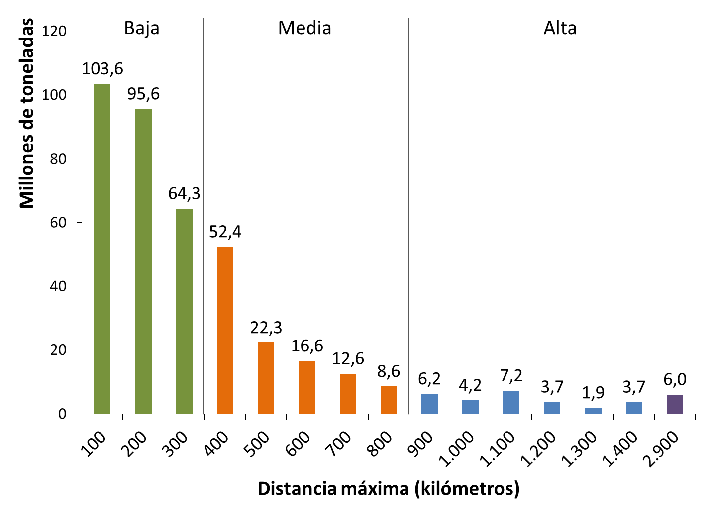
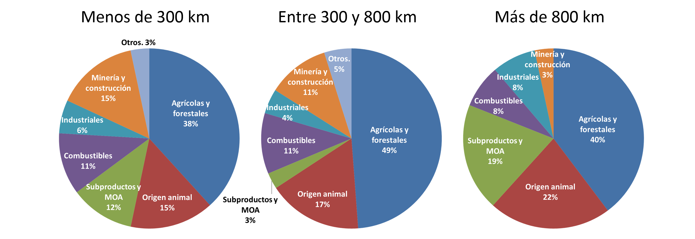
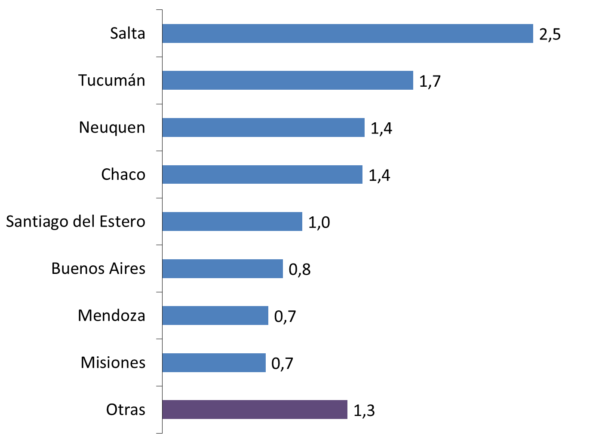
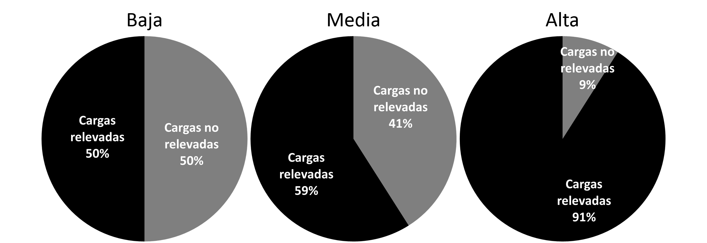

La estimación de orígenes y destinos, así como de los recorridos que los conectan, llevada adelante por este estudio debe entenderse como una primera aproximación a la construcción de la configuración de las cargas que se transportan por automotor en Argentina. En las secciones anteriores se describen los métodos y supuestos adoptados para alcanzar este resultado, los cuales son sin duda perfectibles.
Cabe destacar que el transporte de cargas es un área donde prima la carencia de datos confiables. Además de ofrecer una estimación tentativa de la matriz origen-destino de cargas viales realizada con los datos existentes, este documento pretende generar interés por la temática y llamar la atención sobre la necesidad de generar datos de transporte en forma sistemática y confiable. Cualquier política de transporte integral de cargas requiere necesariamente de un profundo conocimiento de la red existente y de cómo son los flujos de transporte que hoy se mueven por ella.
A partir de los flujos de transporte estimados en este estudio, podemos comenzar a describir algunas características de la red vial de cargas argentina. Se señala que la información presentada a continuación no incluye la referida a los “pares OD implícitos” previamente desarrollada, salvo explícita mención en contrario.
Desde el punto de vista de la concentración de generación de tráficos, la mayor parte de éstos (tanto en la producción de los tráficos como en su atracción) responde a 4 distritos principales que son Santa Fé, Córdoba, la Provincia de Buenos Aires y la Ciudad de Buenos Aires
Figura 42: Toneladas transportadas, por origen o destino provincial (millones de toneladas equivalentes)
Entre la provincia y la ciudad de Buenos Aires, se encuentra algo más del 40% de la producción de tráficos. Si añadimos las provincias de Córdoba y Santa Fe, casi el 80% de la carga producida en el país se origina en alguno de estos 4 distritos. En la superficie total del territorio argentino, éstos representan no más del 22%
A su vez, estos 4 distritos concentran una proporción aún mayor sobre el total de los destinos de los tráficos del país (más de un 80%) pero ya no en la misma medida en cada uno. Santa Fé casi duplica su participación en el total de cargas recibidas respecto de la que tiene en el total de cargas producidas (24% a 42%) mientras que Buenos Aires
Esto significa que, en términos de volumen de cargas, Santa Fe se destaca por ser una provincia netamente receptora mientras que Buenos Aires y Córdoba se podrían clasificar como provincias netamente productoras de cargas.
Esto es lógico, si se tiene en cuenta que la gran mayoría de las exportaciones de granos del país se procesan a través del puerto de Rosario y que este es un tipo de transporte que genera mucho volumen de carga. De las 107 millones de toneladas de granos principales y sus subproductos (soja, maíz, trigo, girasol, sorgo, aceites y subproductos) que se transportan en el país, 81 millones se destinan a la provincia de Santa Fe, de las que 74 millones van a la zona de Rosario.
Hasta aquí se habló de las participaciones de las provincias en orígenes y destinos, pero ¿cómo es el intercambio de cargas entre ellas?
Casi el 70% de las cargas originadas totales se mueve exclusivamente dentro de estos 4 distritos principales, es decir, tiene origen y destino en Santa Fé, Córdoba o Buenos Aires. Por el otro lado, las cargas que no tienen ninguna de estas provincias como origen o destino (se mueven exclusivamente entre el resto de las provincias) representan menos de 10% del total.
Figura 43: Matriz origen-destino entre los 4 principales distritos generadores de tráfico (agregados) y el resto
El alrededor de 20% restante del total de tráficos de cargas se mueve entre estos dos conjuntos de provincias: un 8,2% se origina en los 4 distritos principales y se destina al resto de las provincias mientras que una proporción mayor (14,6%) se mueve en sentido contrario.
Si se abre el conjunto de los 4 distritos principales, se constata que casi un 30% del tráfico total tiene como origen y destino a Buenos Aires. Del 40% restante, cerca de la mitad es tráfico dentro de la provincia de Santa Fé (21,2%).
Luego existen flujos importantes de Buenos Aires a Santa Fe (6,6% del total) y de Córdoba a Santa Fe (6,3%).
Figura 44: Matriz origen-destino entre los 4 principales distritos generadores de tráfico (desagregados) y el resto
De los flujos entre las provincias principales y el resto, el más importante es el que se da desde el resto de las provincias hacia Santa Fé (7,6%). Le siguen luego las cargas que se transportan desde Buenos Aires al resto de las provincias (6,2%) y desde el resto a Buenos Aires (5,6%).
Reviste mayor interés, sin embargo, analizar cómo se distribuyen los flujos de transporte que se dan entre orígenes y destinos de distintas provincias. Si excluimos del cálculo los tráficos que se dan dentro de una misma provincia (o entre las provincias que configuran el “resto”), se puede observar más claramente la preponderancia de Santa Fé como receptor de tráficos interprovinciales (más de la mitad del total de tráficos interprovinciales).
Un quinto del total de los tráficos interprovinciales tiene como destino al “resto” de las provincias, otro quinto tiene como destino a Buenos Aires, mientras que el resto se dirige a la provincia de Córdoba.
Figura 45: Matriz origen-destino entre los 4 principales distritos generadores de tráfico (desagregados) y el resto, excluidos los tráficos intraprovinciales
Destacan algunas situaciones como la escasez de tráficos destinados a Buenos Aires con origen en la provincia de Córdoba: menos del 1% del total de tráficos interprovinciales. En parte esto podría estar señalando omisiones del propio modelo, pero la magnitud de la cuestión es llamativa.
Cabe también destacar nuevamente el carácter exportador de tráfico originado en otras provincias de la provincia de Santa Fé: menos del 7% de los tráficos interprovinciales
Si observamos ahora el tipo de cargas que se transportan, se destaca la preponderancia del sector primario tanto en toneladas como en toneladas-kilómetro. Si contamos todos los productos de origen agropecuario (incluyendo las manufacturas de origen agropecuario) más de tres cuartos del tráfico de cargas viales en Argentina está relacionado con el agro. Si contabilizamos el tráfico por las toneladas-kilómetro generadas, esta proporción es un poco menor a los tres cuartos del total especialmente por las bajas distancias medias en el transporte de los subproductos como los aceites.
Figura 46: Composición de las cargas generadas, por rubro
Notas: El cálculo de la composición de las cargas por rubros se realiza sin tener en cuenta la “carga no relevada” que surge de los pares Origen-Destino implícitos. El total por lo tanto hace referencia al total de las cargas que sí fueron relevadas.
Esta afirmación, sin embargo, debe tomarse como provisoria ya que existe una gran cantidad de cargas no determinadas (correspondientes a los “pares OD implícitos”) cuya composición se desconoce. Más aún, es razonable suponer que el grado de relevamiento de productos agrícolas en este modelo es muy superior al de otros tipos de carga debido a la disponibilidad de datos. En este caso habrá, entre las cargas no relevadas, una proporción mayor de productos no relacionados con el agro que disminuiría la importancia del agro en el total.
La composición analizada da cuenta del 56% del total de la carga, que es la que ha podido ser relevada. El otro 44% corresponde a los pares OD implícitos cuya composición en productos es materia para futuros estudios.
La distancia media de la matriz origen-destino completa (carga relevada e implícita) es de 309km. Alrededor de tres cuartos del volumen de carga transportado no recorre más de 400km. Recordemos, sin embargo, que la inclusión de los pares OD implícitos en la matriz empuja a la baja la distancia media (sin estos, sería de 370km). Si existiera una proporción mayor de pares OD no relevados de larga distancia de la que fue estimada, la distancia media podría ser mayor (aunque también podría ser menor, si en realidad existiera una gran cantidad de pares OD de corta distancia que no hayan sido relevados). Debe señalarse que la información incluye el caso de cargas que se desplazan dentro de una misma zona de tráfico. A estos casos se les asignó una distancia convencional de 70 km.
Figura 47: Histograma de volúmenes de cargas transportados según distancia recorrida, por rangos de 100km
Notas: La distancia indica el límite superior de cada rango de 100 km. El último rango reúne la carga de los últimos 1500 km de distancia (de 1401 km a 2900 km).
Las tres primeras barras contienen carga que se desplaza menos que la distancia media de la matriz mientras que el resto recorre distancias mayores. La última barra acumula todos los pares OD que recorren distancias mayores a los 1400 km.
En base al gráfico anterior, se proponen tentativamente tres segmentos de distancia media para clasificar las cargas:
· Baja: menor a 300 km (64,0% de las toneladas y 28,6% de las ton-km)
· Media: entre 300 y 800 km (28,0% de las toneladas y 40,8% de las ton-km)
· Alta: más de 800 km (8,1% de las toneladas y 30,6% de las ton-km)
Si tomamos las cargas que se desplazan menos de 400 km, estas representan alrededor de tres cuartos del total de las toneladas transportadas (y un 40% del total de toneladas-kilómetro de tráfico de cargas generado).
Es interesante observar cuál es la composición en rubros de productos según el segmento de distancia recorrida al que pertenecen las cargas que se transportan.
En cuanto a las cargas que se transportan menos de 300 km no es muy diferente de la del total porque como se dijo anteriormente este segmento reúne casi un 65% del total de toneladas transportadas.
Figura 48: Composición de las cargas según distancia media, por rubro (millones de toneladas equivalentes)
Nota: El cálculo de la composición de las cargas por rubros se realiza sin tener en cuenta la “carga no relevada” que surge de los pares origen-destino implícitos. El total de las tortas por lo tanto hace referencia al total de las cargas que sí fueron relevadas.
Si observamos la composición de las cargas de media distancia, lo más destacable es la fuerte caída de la participación de los subproductos y manufacturas agrícolas (del 12% al 3%). Esta participación se recupera e incluso aumenta en el segmento de larga distancia (19%).
En el caso de los subproductos y manufacturas agrícolas de baja distancia, casi el 90% se trata de transportes intrazona a los que se asignó convencionalmente una distancia de 70 km (dado que el origen y el destino son los mismos -a los efectos de la zonificación adoptada en el modelo- también podría haberse adoptado la convención de registrarlos con 0 km). De estos, la casi totalidad corresponde a la zona de tráfico de Rosario (más del 95%). Este es el caso de la soja que llega a proximidades del puerto para ser exportada luego de convertirse en aceite, y de todos los subproductos de la molienda de trigo y de oleaginosas.
En el segmento de alta distancia se encuentran principalmente el azúcar (Tucumán, Salta y Jujuy) y los vinos (Mendoza y San Juan). En menor medida también incide el transporte de té (Misiones).
La presencia de los productos agrícolas y forestales es destacable en los tres segmentos de distancia, siendo bastante más importante en el segmento medio entre los 300 y los 800 km (más de la mitad corresponde a este rubro).
Figura 49: Productos agrícolas y forestales transportados a más de 800 km, por origen provincial (millones de toneladas)
En baja distancia, los orígenes provinciales más importantes son Buenos Aires y Santa Fé (casi el 70% del total de baja distancia) seguidas por Córdoba y Entre Ríos.
En media distancia, Buenos Aires y Córdoba producen más del 70% del total seguidas por Santiago del Estero, Entre Ríos y La Pampa.
En alta distancia hay varias provincias relevantes. Salta es la más importante, seguida por Tucumán, Neuquén, Chaco y Santiago del Estero. Estas 5 provincias reúnen casi el 70% de la producción del rubro que se transporta a más de 800 km de distancia.
El caso de minería y construcción debe observarse teniendo en cuenta que el rubro no contiene una parte importante de la actividad minera del país que se transporta por ferrocarril. Este es el caso, por ejemplo, de los minerales extraídos por la minera Bajo La Alumbrera.
Los productos de este rubro que se transportan por la red vial están destinados principalmente a la construcción (cemento, piedra, canto rodado, etc.) y generalmente se extraen en las proximidades de su lugar de consumo. Esto se observa en la participación sobre el total de toneladas transportadas que cae 4 puntos entre los segmentos de baja (15%) y media distancia (11%), y casi desaparece en el segmento de alta distancia (3%).
En el caso de los productos industriales, la incidencia del costo de transporte es significativamente menor en el valor total ya que se trata de productos de gran densidad de valor con respecto a su volumen. No sorprende entonces observar que la participación de bienes industriales que se transportan más de 800 km es comparativamente alta en relación a los segmentos de baja y media distancia.
No debe perderse de vista que los resultados expuestos en este estudio deben tomarse como aproximaciones a lo que pueden ser los flujos de transporte reales en la red vial. Como se describe en detalle en las secciones anteriores, los orígenes y destinos de cada producto fueron estimados a partir de fuentes de datos de diversa confiabilidad y nivel de agregación.
Los procedimientos empleados para distribuir datos de un nivel de agregación mayor al de “departamento” o “partido” (en el caso de la provincia de Buenos Aires) en algunos casos podrían introducir un sesgo indebido hacia la asignación de mayores tráficos a grandes poblaciones. La correlación entre la generación de tráficos de cargas (tanto de producción como de atracción) y la población puede ser fuerte o débil, dependiendo del producto que se trate. De todas formas, la distribución por población sólo fue utilizada como último recurso, en los casos donde no existían mejores datos o métodos de asignación.
En cuanto a la confiabilidad de los cálculos de composición de la carga transportada, debe tenerse además en cuenta el problema de las cargas no relevadas (“pares OD implícitos”). En la siguiente figura se puede observar la proporción (en toneladas) de las cargas no relevadas respecto del total, según el segmento de distancia media al que pertenecen.
Figura 50: Incidencia de las cargas no relevadas, por segmento de distancia
La incidencia disminuye a medida que aumenta la distancia media. Esto en parte se debe al método de estimación de los pares origen-destino no relevados. Como se explicó anteriormente, se corrieron simulaciones para generar pares origen-destino que explicaran todas las discrepancias entre el conteo de tráfico de la DNV y las estimaciones del modelo. El parámetro para generar estas posibles redes de cargas “no relevadas” fue la distancia media. Las dos simulaciones más extremas (distancia media mínima y máxima) arrojaron redes cuyas distancias medias eran 113 y 351 km respectivamente.
Como la distancia media estimada es de 370 km, si se hubiera elegido la red de cargas no relevadas propuesta por la simulación que maximiza la distancia media del conjunto, la incidencia de estas por segmento de distancia sería bastante similar en lugar de caer pronunciadamente ante distancias más largas.
Como ya se mencionó, al no tener mayor información sobre la posible distancia media de las cargas no relevadas (las estimaciones del modelo tanto pueden estar omitiendo cargas de corta distancia como cargas de larga distancia) se corrió una simulación para generar flujos de cargas no relevadas o “implícitas” que arrojaran una distancia media promedio entre los dos extremos (232 km).
Al ser menor que la distancia media del modelo estimado, resulta evidente que la incidencia de las cargas “no relevadas” será mayor entre los pares origen-destino de menores distancias.
Por último, debe advertirse que el cálculo del recorrido que une orígenes con destinos puede tener en algunos casos un sesgo indebido hacia minimizar las distancias del modelo. Esto sin embargo sería más grave en el caso de un entorno urbano, donde la multiplicidad de opciones para llegar de un nodo a otro de la red exige la consideración de varios “costos” asociados a los distintos recorridos que van más allá de la mera distancia (por ejemplo, la disponibilidad y calidad de distintos tipos de transporte público).
En un contexto interurbano y en una red vial de baja variedad como la de Argentina (y por lo tanto sin demasiadas rutas alternativas para cada par origen-destino), es esperable que la distancia sea el “costo” más relevante para decidir el recorrido que une dos nodos. Sin embargo debe tenerse en cuenta que existen otros elementos que inciden en el recorrido efectivamente elegido por los transportistas para desplazar carga de un punto a otro, más allá de la distancia, además de los eventuales errores por agregación en zonas de tráfico.
La matriz OD y los flujos de transporte estimados en este estudio deben tomarse entonces como un primer paso para la construcción de una representación más completa de la red vial de cargas de la Argentina. Un paso necesario para este objetivo deberá ser la realización de una encuesta de cargas de amplio alcance. Esto es un requisito indispensable para avanzar en la construcción de una política de transporte de largo plazo que busque una planificación coherente y sistemática del sector.
En este documento se ha expuesto la metodología seguida para estimar el modelo de la red vial de cargas y los resultados obtenidos, además de las advertencias del caso respecto de la confiabilidad del mismo. Sin embargo existen numerosas posibilidades de análisis sobre la base de datos construida que aún no han sido explotadas, y el lector de este estudio podría tener una forma diferente y enriquecedora de acercarse a los datos.
En el blog del Centro de Estudios de la Situación y Perspectivas de la Argentina (http://blogdelcespa.blogspot.com.ar/) se encuentra disponible la versión web de este documento en la que los gráficos son manipulables por el lector y todas las tablas pueden ser descargadas, así como la base de datos completa de la matriz origen-destino y la red en formato preparado para graficar mapas con el software gratuito Tableau Public.
Los autores esperan que esto sea un aporte que impulse el análisis y la investigación del transporte en la Argentina, así como una forma de interesar a un público más amplio por la temática.